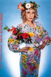
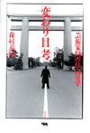

|
|
|
|
2005'06 ここでご紹介した本はいずれも最寄りの書店、または当ホームページ「ご購入について」の中のオンライン書店等経由でお求めいただけます。 |
渋谷の古書店フライング・ブックスが本になりました！ 「Flying Booksは文学的なロックンロール・ラウンジであり、今の日本の若者たちが創り上げようとしているNEW CULTUREの中心的空間だ!」
|
|||
出版社10社共同企画「四六判宣言」第６弾のご案内です。＜盛夏企画＞ 「四六判宣言―文庫では読めない本たち―」は今年で６回目の開催を迎えます。 |
人文書600点フェア開催！ 紀伊国屋書店新宿南店にて四つのフェアが同時開催されます。書物復権フェア、人文会戦後60年フェア、アジアの本の会フェア、四六版宣言フェアの四つのフェアです。場所は高島屋から渡り廊下でつながっている三階の文芸フロアのメインフェア台。人文書600点が一同に会します。ご期待ください。 |
山崎まどかさんオススメ洋書フェアを青山ブックセンター本店にて開催 山崎まどかさんが選んだ小説やノンフィクションのペーパーバック、ハードカバーを集めたフェアです。店頭にて山崎さんのオススメコメント、ショートエッセイが読める小冊子が配布されます。 |
映画『Little Birds』が順次公開中！ 本当のイラク戦争の姿を描いた話題作、『Little Birds-イラク戦火の家族たち-』が、４月23日新宿K's Cinemaを皮切りに、全国主要都市で順次公開されています。アメリカ軍によるイラク侵攻以来、「News23」などで精力的にイラクからの中継リポートを続け数々の賞を受賞したジャーナリスト綿井健陽監督が、１年半の取材映像から完成させた劇場用映画です。公開と同時に、最前線のレポート、撮影日記をまとめたノンフィクション『リトルバーズ──戦火のバグダッドから』も小社より４月末に発売。テレビでは伝えられることのなかった戦争の現実を、受けとめてみてください。 新潟 札幌 京都 福岡 福島 他 全国主要都市にて順次公開 ●公式ホームページ |
『テレピン月日』の大竹伸朗さん個展 作家の、日常の心に浮かんだ風景を描いた作品が展示されます。 'On paper'大竹伸朗展 |
森村泰昌さん5月21日より個展開催！ 「森村泰昌諷刺家伝ゴヤに捧ぐ」と題し、ショウゴア−ツにて7月2日まで。   |
好評連載中の小野博さん、写真集刊行！ 13人の写真家が、EU全25カ国を撮りおろした写真集シリーズ「In-between」全14巻が、2005年6月から、有限会社オシリスより販売されます。当ホームページで好評連載の小野博さんの写真集は、7月10日の発売です。 主催・発行：EU・ジャパンフェスト日本委員会 販売に関する問い合わせ：有限会社オシリス |
お知らせ！図書目録最新版ができました！ お待たせいたしました。図書目録2005年版ができました。現在、小社が在庫する書籍タイトルを網羅した目録です（品切れ書籍のリストもあります）。ご希望の方は、こちらのフォーマットからお申し込みください。 |
祝！前田速夫さん、読売文学賞受賞!! 前田速夫著『余多歩き‐菊地山哉の人と学問』（晶文社刊）が評論・伝記賞を受賞しました。戦後長くアカデミズムから黙殺されてきた、在野の民俗学者に光をあてたこの本は、東京市の土木役人と二足のわらじをはきながら、全国の被差別部落をくまなく踏査、その多くでまつられる白山神社に着目して独自の歴史観を打ち出した菊池山哉（1890〜1966）の初の本格評伝となります。
|
|||
朝日カルチャーセンター公開講座に注目！ |
信田さよ子さん講演スケジュール 「新・愛と執着のはざま」を好評連載の信田さよ子さんが、日本各地で講演会を行います。詳細は以下のとおりです。 名古屋市 DVと虐待について（仮） 仙台市 公開シンポジウム テーマ「家庭内の暴力-この10年を振り返る」 女性に対する暴力をなくす運動週間 |
『「心」と戦争』『平和と平等をあきらめない』が好評の高橋哲哉さんの講演会ご案内です。 季刊『前夜』ブック・トーク 大阪教組教研･全体会 「反日」とは何か 東アジア市民の対話 平和憲法ネットワーク･やまぐち設立記念講演会 第18回靖国･政教分離訴訟全国交流集会 |
明川哲也さん出演の『爆笑問題のススメ』がDVDに! 毎回多彩な作家ゲストを迎えるテレビのトークバラエティーがDVDになりました。「作家の目線V.S爆笑問題の目線」で熱く切り込んでいきます。核心は突いてはいても涙を飲んでカットせざるを得なかった未放送シーンを、ふんだんに収録。番組を見ていない人はもちろん、見た人にも新たなサプライズが待っています! 弊社刊『メキシコ人はなぜハゲないし、死なないのか』も好評の明川哲也さん(TETSUYA）も登場します。 「爆笑問題のススメVol.2 実はこんなトーク、カットしてました 日本を代表する裏・文化人 編」 収録作家（順不同）: 発売:2004年12月22日 |
|
本に掲載された村木与四郎さん、忍さんのスケッチの一部を、複製して販売します。
村木与四郎さんのサイン入りで、A3サイズの複製画を額装したものを４点、各100枚の限定販売。さらに、ポストカードを12枚1組で好評販売中。
|
「岸和田だんじり祭」だんじり若頭日記 江弘毅 1680円 大尉のいのしし狩り（仮） デイヴィッド・イーリイ 予価2400円 ロウ・コミュニケーション 若野 桂 予価3200円 ジャズは海をわたる（復刻版）植草甚一 1470円 シネマディクトJの映画散歩〈イタリア/イギリス編〉（復刻版）植草甚一 1470円 京都で学ぶ 晶文社出版編 予価1400円 J.C.オカザワの下町を食べる 下町の名店二百選 J.C.オカザワ著 予価1800円 |
| 人生の特別な一瞬 長田弘／4刷一六八〇円 しあわせのねだん 角田光代／2刷一四七〇円 仕事をしなければ、自分はみつからない 三浦展／3刷一六八〇円 スローな手づくり調味料 林弘子／2刷一六八〇円 子どもの文化人類学 原ひろ子／32刷一六八〇円 もうひとつの手話 斉藤道雄／8刷一九九五円 なにもない空間 ブルック／24刷一八九〇円 生きのびるためのデザイン パパネック／21刷三一五〇円 トリックスター ケレーニイ他／19刷三一五〇円 マゾッホとサド ドゥルーズ／３刷二二〇五円 海を失った男 スタージョン／４刷二六二五円 あしたの太鼓打ちへ 林英哲／10刷二三一〇円 |